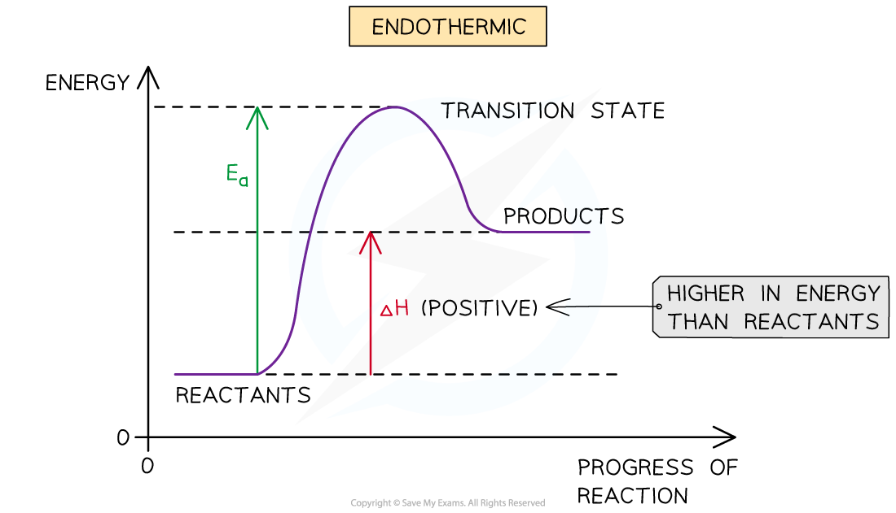
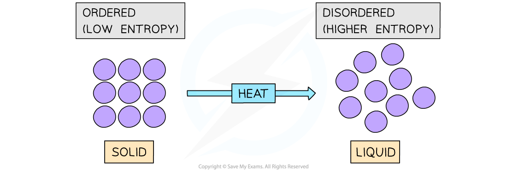
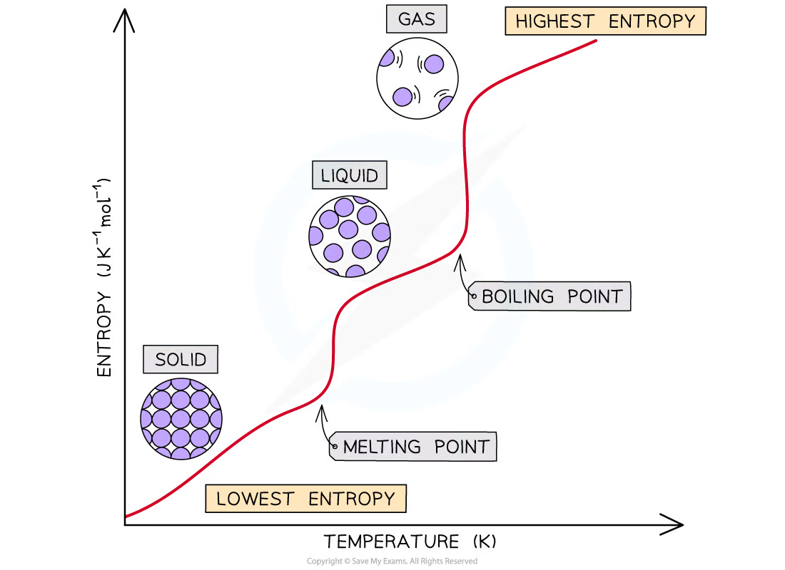
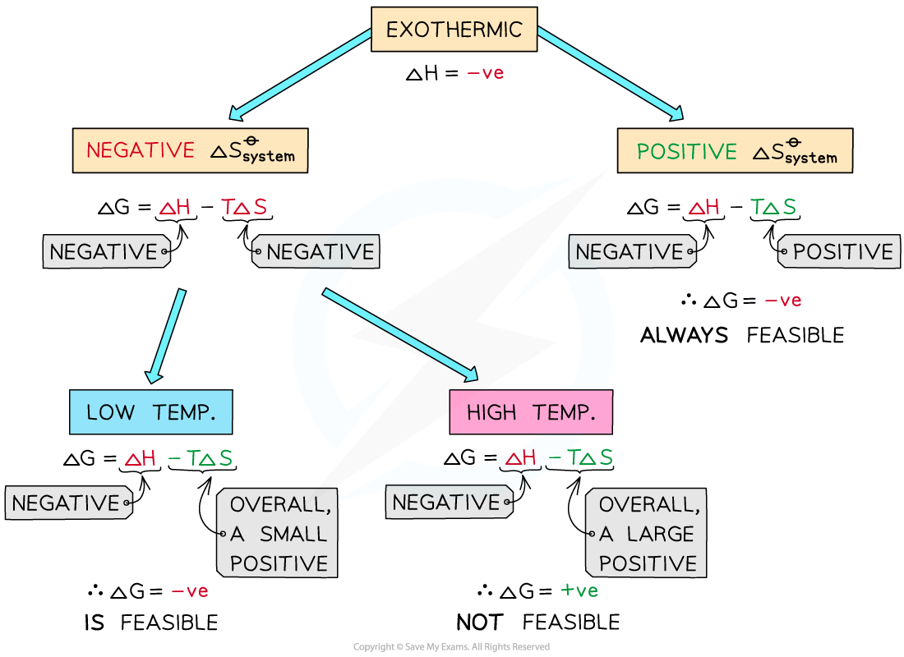
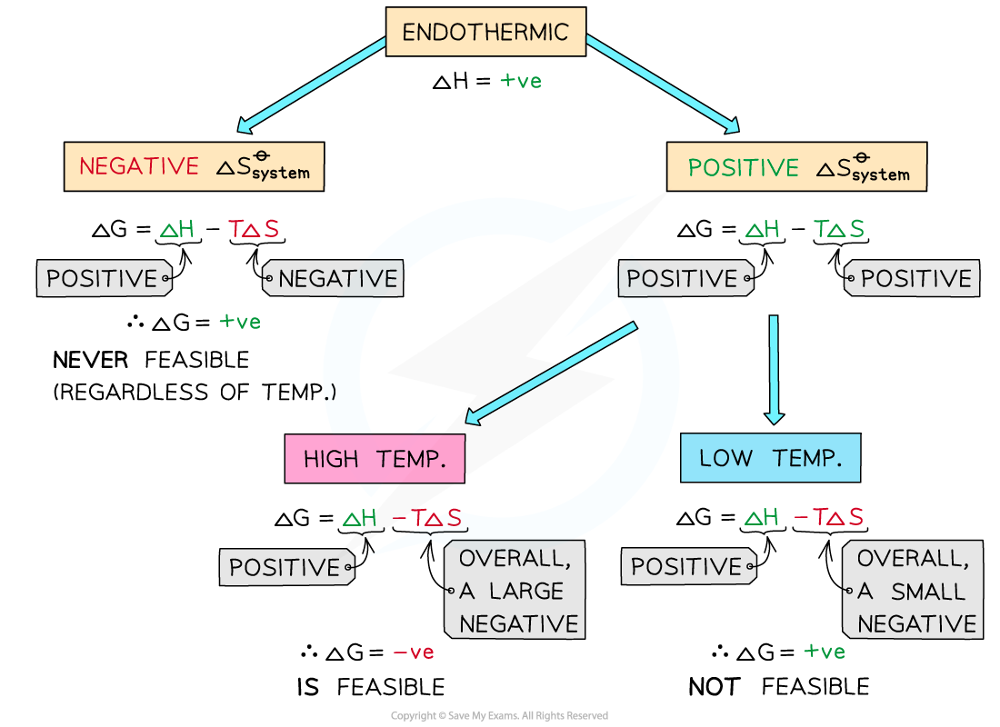
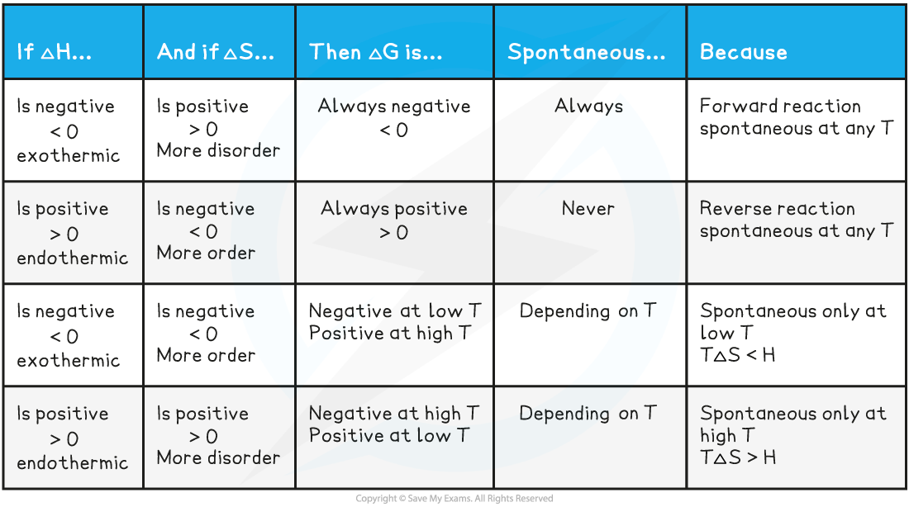

4.2 Entropy · Topic 12A
Entropy changes, feasibility, Gibbs free energy and stability
4.2 Entropy · Topic 12A
本页严格按 Pearson Edexcel International Advanced Level Chemistry specification 的 Topic 12A: Entropy 编排，内容来自项目内的 `4.2 Entropy.pdf.pdf`。解释采用中文，专业词汇保留 English，便于和 specification、Data Booklet 及 exam wording 对照。
Learning objectives
学完本章后，你应该能够：
- explain why enthalpy change alone cannot predict whether a reaction occurs；
- define entropy as disorder and the random dispersal of particles and energy quanta；
- explain how entropy changes with temperature and physical state，并应用 Third Law；
- predict entropy changes for changes of state、dissolving、gas formation 和 mole changes；
- calculate \(\Delta S_{\mathrm{system}}\)、\(\Delta S_{\mathrm{surroundings}}\) 和 \(\Delta S_{\mathrm{total}}\)；
- use the sign of \(\Delta S_{\mathrm{total}}\) 判断 reaction feasibility；
- calculate the temperature at which an endothermic reaction becomes feasible；
- distinguish thermodynamic stability from kinetic stability；
- use Gibbs free energy as an optional extension to connect \(\Delta H\)、\(\Delta S\) and temperature。
12.1 Entropy and the driving force for change
Why can endothermic reactions occur?
很多 everyday reactions 是 exothermic，但 enthalpy change \(\Delta H\) alone 不能决定 reaction 是否发生。有些 endothermic reaction 仍然可以在合适条件下 spontaneous，因为 reaction 的 driving force 还包括 entropy change。
例如，在 endothermic reaction 中，products 的 energy 可能高于 reactants。此时不能只根据“energy 增加”判断 reaction 不会发生；必须同时考虑 system 和 surroundings 的 entropy。

Definition of entropy
Entropy, \(S\), 可以理解为 system 中 particles 及其 energy quanta 的 possible arrangements 数量，也就是 system 的 disorder 或 randomness 的 measure。
更准确地说，entropy 关注两种 random dispersal：
- molecules / ions 在空间中的 random dispersal；
- energy quanta 在 particles 之间的 random dispersal。
当 particles 的 arrangements 数量增加，entropy 增大。通常，energy 越分散、particles 越自由移动，system 的 entropy 越高。
Boltzmann relationship
如果 system 有 \(W\) 种 possible arrangements：
\[ S=k\ln W \]
\(k\) 是 Boltzmann constant。在本课程中，重点是理解：\(W\) 越大，\(S\) 越大；不要求用该 equation 进行复杂 calculation。
Dispersal of particles and energy
固体中的 particles 通常被限制在 regular lattice 中，只能在固定位置附近 vibrate；liquid 中 particles 仍然较近，但可以相互移动；gas 中 particles 之间距离很远，可以在整个 container 中自由移动。因此同一 substance 通常满足：
\[ S_{\mathrm{solid}}<S_{\mathrm{liquid}}<S_{\mathrm{gas}} \]
当 temperature 升高时，particles 的 motion 增强，energy 可以用更多方式分配，因此 entropy 通常增加。

12.2 Entropy, temperature and physical state
Third Law and changes of state
Edexcel specification 要求理解以下趋势：
- temperature 升高，entropy 增大；
- solid \(\rightarrow\) liquid，entropy 增大；
- liquid \(\rightarrow\) gas，entropy 显著增大；
- gas \(\rightarrow\) liquid 或 liquid \(\rightarrow\) solid，entropy 减小；
- perfect crystal 在 \(0\ \mathrm{K}\) 时 entropy 为 zero。
在 melting 时，regular lattice 被破坏，particles 可以 rotate、slide 和 move past one another；在 boiling 时，particles 进一步分散到整个 volume 中。因此 boiling 对 entropy 的影响通常比 melting 更大。

Spontaneous spreading of a gas
将两个 gas jars 之间的 barrier 移除后，gas molecules 会自发 spread throughout the available room。没有人为地把 molecules 推向每个位置，但 system 会从较少的 arrangements 走向更多的 arrangements。
这说明 natural direction of change 通常指向 increasing total entropy。这里的 spontaneous 只表示 thermodynamically feasible，并不表示 reaction 一定 fast。
12.3 Predicting entropy changes
Changes of state and gas formation
判断 \(\Delta S_{\mathrm{system}}\) 时，先比较 reactants 与 products 的 physical states 和 particles 的自由程度：
| Change | Expected \(\Delta S_{\mathrm{system}}\) |
|---|---|
| solid \(\rightarrow\) liquid | positive |
| liquid \(\rightarrow\) gas | strongly positive |
| gas \(\rightarrow\) liquid | negative |
| liquid \(\rightarrow\) solid | negative |
| formation of a gas from solids or liquids | usually positive |
| reduction in gaseous moles | usually negative |
例如：
\[ \ce{CaCO3(s) -> CaO(s) + CO2(g)} \]
reaction 生成 gas molecule，system 的 disorder 增加，因此 \(\Delta S_{\mathrm{system}}>0\)。
Dissolving an ionic solid
Dissolving solid ammonium nitrate 时，ionic lattice 中的 ordered ions 被分散到 solution 中，particles 的 possible arrangements 增加，因此 entropy 往往增加：
\[ \ce{NH4NO3(s) -> NH4+(aq) + NO3-(aq)} \]
但 dissolving 的 enthalpy 和 entropy 不能只凭“solid 变成 aqueous ions”机械判断。过程中同时发生：
- breaking attractions in the ionic lattice：吸收 energy，并增加 disorder；
- forming interactions between ions and solvent molecules：释放 energy，也可能使 solvent molecules 更有序。
因此 dissolving 可以是 endothermic 或 exothermic，必须结合 data 判断。
Reactions between solids and gas evolution
两个 solids 反应时，starting system 的 disorder 通常较低。如果 products 中出现 liquid 或 gas，particles 的 movement 和 possible arrangements 增加，\(\Delta S_{\mathrm{system}}\) 往往为 positive。
例如：
\[ \ce{2NH4Cl(s) + Ba(OH)2.8H2O(s) -> BaCl2.2H2O(s) + 2NH3(g) + H2O(l)} \]
该 reaction 生成 ammonia gas 和 liquid water，因此 system 的 entropy 增加。反应虽然可以是 endothermic，但 feasibility 仍要看 \(\Delta S_{\mathrm{total}}\)。
12.4 Total entropy change
System and surroundings
reaction 的 entropy change 不能只看 system。若 reaction 是 exothermic，released energy 会传入 surroundings，使 surroundings 的 energy quanta 有更多 ways to be arranged，从而可能产生较大的 positive entropy change。
Total entropy change 为：
\[ \Delta S_{\mathrm{total}} =\Delta S_{\mathrm{system}}+\Delta S_{\mathrm{surroundings}} \]
在 constant pressure 下，若 \(\Delta S_{\mathrm{total}}>0\)，reaction 在该条件下 thermodynamically feasible / spontaneous。
Entropy change of the system
使用 Data Booklet 中的 standard molar entropies \(S^\circ\)：
\[ \Delta S^\circ_{\mathrm{system}} =\sum S^\circ_{\mathrm{products}} -\sum S^\circ_{\mathrm{reactants}} \]
每个 \(S^\circ\) 必须乘以 balanced equation 中对应的 stoichiometric coefficient。Entropy 的单位通常为 \(\mathrm{J\,K^{-1}\,mol^{-1}}\)，不是 enthalpy 常用的 \(\mathrm{kJ\,mol^{-1}}\)。
Worked example · \(\Delta S_{\mathrm{system}}\)
Calculate \(\Delta S^\circ_{\mathrm{system}}\) for：
\[ \ce{2Mg(s) + O2(g) -> 2MgO(s)} \]
Given：
\[ S^\circ[\ce{Mg(s)}]=32.60,\quad S^\circ[\ce{O2(g)}]=205.0,\quad S^\circ[\ce{MgO(s)}]=38.20 \]
\[ \begin{aligned} \Delta S^\circ_{\mathrm{system}} &=(2\times38.20)-(2\times32.60+205.0)\\ &=-193.8\ \mathrm{J\,K^{-1}\,mol^{-1}} \end{aligned} \]
Answer： \(\Delta S^\circ_{\mathrm{system}}=-193.8\ \mathrm{J\,K^{-1}\,mol^{-1}}\)。
Worked example · total entropy change
For the formation of one mole of sodium chloride：
\[ \Delta S^\circ_{\mathrm{system}}=-90.1\ \mathrm{J\,K^{-1}\,mol^{-1}} \]
\[ \Delta S^\circ_{\mathrm{surroundings}}=+137.9\ \mathrm{J\,K^{-1}\,mol^{-1}} \]
\[ \Delta S^\circ_{\mathrm{total}} =-90.1+137.9 =+47.8\ \mathrm{J\,K^{-1}\,mol^{-1}} \]
因为 \(\Delta S^\circ_{\mathrm{total}}>0\)，该 reaction 在这些 conditions 下 thermodynamically feasible。
Entropy change of the surroundings
Surroundings 的 entropy change 使用：
\[ \Delta S_{\mathrm{surroundings}}=-\frac{\Delta H}{T} \]
其中 \(T\) 为 kelvin，且 \(\Delta H\) 必须换算成 \(\mathrm{J\,mol^{-1}}\)。因此：
- exothermic reaction：\(\Delta H<0\)，所以 \(\Delta S_{\mathrm{surroundings}}>0\)；
- endothermic reaction：\(\Delta H>0\)，所以 \(\Delta S_{\mathrm{surroundings}}<0\)。
Worked example · \(\Delta S_{\mathrm{surroundings}}\)
对于 reaction：
\[ \ce{Al2O3(s) + 3C(s) -> 2Al(s) + 3CO(g)} \]
若 \(\Delta H=+1336\ \mathrm{kJ\,mol^{-1}}\)，\(T=298\ \mathrm{K}\)，求 \(\Delta S_{\mathrm{surroundings}}\)。
先换算：
\[\Delta H=+1336\,000\ \mathrm{J\,mol^{-1}}\]
\[ \Delta S_{\mathrm{surroundings}} = -\frac{1336000}{298} = -4483\ \mathrm{J\,K^{-1}\,mol^{-1}} \]
Endothermic reaction 从 surroundings 吸收 energy，所以 surroundings entropy 为 negative。
12.5 Feasibility and temperature
Feasibility from \(\Delta S_{\mathrm{total}}\)
Reaction 在给定 conditions 下 feasible 的条件是：
\[ \Delta S_{\mathrm{total}}>0 \]
常见 sign combinations：
| \(\Delta S_{\mathrm{system}}\) | \(\Delta S_{\mathrm{surroundings}}\) | Conclusion |
|---|---|---|
| positive | positive | 通常 feasible |
| negative | positive | surroundings 的 positive contribution 必须更大 |
| positive | negative | system 的 positive contribution 必须更大 |
| negative | negative | 不 feasible |
注意：feasible / spontaneous 不代表 reaction fast。Reaction 可能 thermodynamically feasible，但由于 activation energy 很高而 kinetically slow。


Temperature effect
Temperature 越高，\(\left|\Delta S_{\mathrm{surroundings}}\right|=\left|\Delta H/T\right|\) 越小。因此：
- exothermic reaction 的 positive \(\Delta S_{\mathrm{surroundings}}\) contribution 会减弱；
- endothermic reaction 的 negative \(\Delta S_{\mathrm{surroundings}}\) contribution 也会减弱。
对于 \(\Delta H>0\) 且 \(\Delta S_{\mathrm{system}}>0\) 的 reaction，低温时可能不 feasible，但 temperature 足够高时，system 的 positive entropy contribution 可以占优势。
Worked example · feasibility temperature
某 reaction 的 \(\Delta H=+1336\ \mathrm{kJ\,mol^{-1}}\)，\(\Delta S_{\mathrm{system}}=+581\ \mathrm{J\,K^{-1}\,mol^{-1}}\)。求 reaction 刚好变为 feasible 的 temperature。
临界点取 \(\Delta S_{\mathrm{total}}=0\)，等价于：
\[ \Delta G=0,\qquad T=\frac{\Delta H}{\Delta S_{\mathrm{system}}} \]
将 \(\Delta H\) 换为 joules：
\[ T=\frac{1336000}{581}=2299\ \mathrm{K} \]
所以 temperature 高于约 \(2299\ \mathrm{K}\) 时，reaction 才 thermodynamically feasible。
12.6 Gibbs free energy extension
Gibbs equation
Specification 允许在答案中使用 Gibbs free energy，但不是 Topic 12A 的唯一 required route：
\[ \Delta G=\Delta H-T\Delta S_{\mathrm{system}} \]
使用 Gibbs equation 时，\(\Delta H\) 和 \(T\Delta S\) 必须使用相同 energy units。若 \(\Delta H\) 用 \(\mathrm{kJ\,mol^{-1}}\)，则 \(\Delta S\) 要从 \(\mathrm{J\,K^{-1}\,mol^{-1}}\) 换成 \(\mathrm{kJ\,K^{-1}\,mol^{-1}}\)。
\[ \Delta G\leq0\quad\Longrightarrow\quad \text{feasible} \]
Gibbs approach 与 \(\Delta S_{\mathrm{total}}>0\) 的判断一致，但 exam 中优先使用题目要求的 expression。
Sign summary
| \(\Delta H\) | \(\Delta S_{\mathrm{system}}\) | Feasibility trend |
|---|---|---|
| negative | positive | always feasible at any temperature |
| positive | negative | never feasible at any temperature |
| negative | negative | usually feasible at low temperature |
| positive | positive | usually feasible at high temperature |

12.7 Thermodynamic and kinetic stability
Two different meanings of stable
Thermodynamic stability 取决于 reaction 是否 spontaneous / feasible，主要由 \(\Delta S_{\mathrm{total}}\) 或 \(\Delta G\) 判断。
Kinetic stability 取决于 reaction rate 和 activation energy。一个 substance 可能 thermodynamically unstable，但因为 activation energy 很高，在 room temperature 下仍然长时间不发生明显变化。
例如 hydrogen peroxide 的 decomposition：
\[ \ce{H2O2(l) -> H2O(l) + 1/2O2(g)} \]
在 thermodynamic 上可以发生，但在 room temperature 下 reaction 很慢。加入 manganese dioxide，提供 lower activation energy 的 alternative pathway，decomposition rate 显著增加。
因此：
- thermodynamics 告诉我们 reaction 能不能发生；
- kinetics 告诉我们 reaction 发生得有多快。
Exam checklist
Source note
本页章节素材来自项目内的 `Note per Chapter/Note per Chapter/4.2 Entropy.pdf.pdf`；考纲校对来自 `International-A-Level-Chemistry-Spec.pdf` 的 Topic 12A: Entropy。图像已从 PDF 内嵌对象独立提取并存放在 `assets/notes/entropy/`。